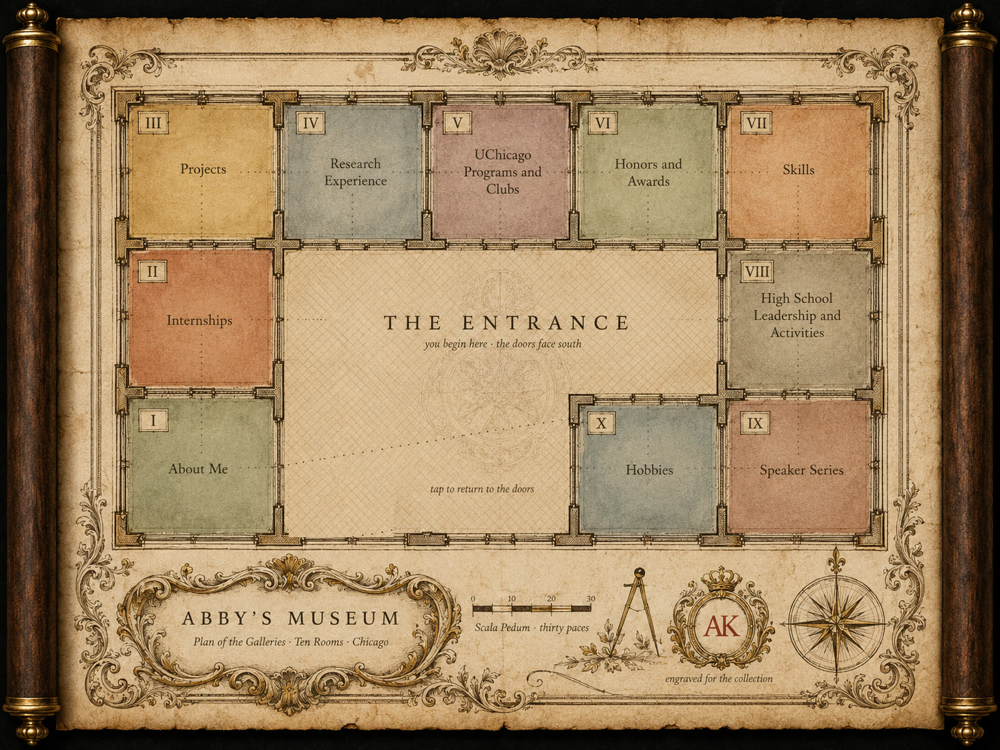
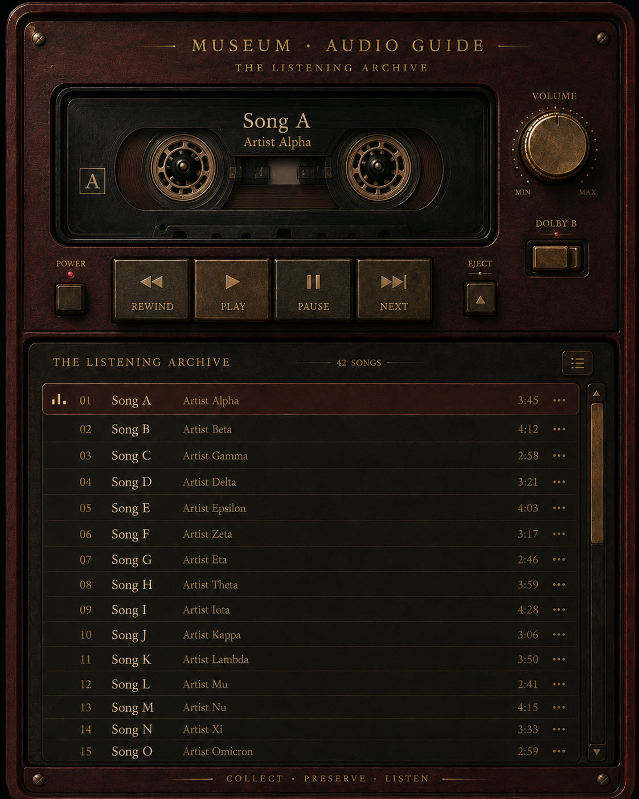

Est. 2026 · Chicago
My portfolio, hung as a private collection. Every project, role and piece of research is a painting here, chosen because something in it matches something in the work. Forty works across five rooms. Drag any painting to rehang it.
Scroll

